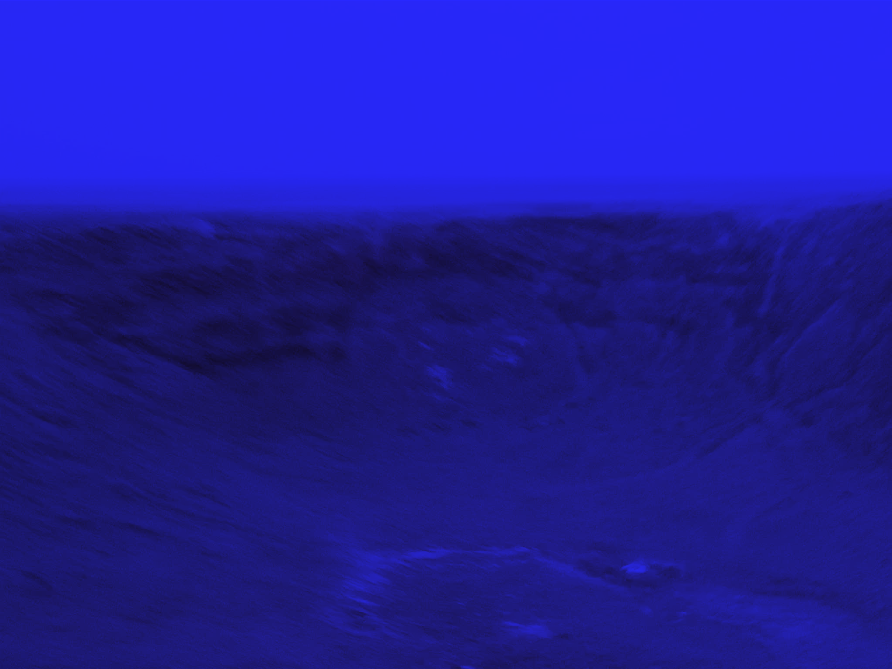

국내 주요 지도 서비스에서 특정 장소가 감쪽같이 숨겨지거나 흐려져있다. 왜?
공간정보법 제35조 및 보안관리규정에 따라 국가 중요 시설물은 지도에 공개하지 않도록 규정되어 있다. 결국 지도 위에 그려진 정보는 국가기밀, 군사시설, 분쟁 지역 등 권력에 의해 삭제되거나 왜곡된다.

공간정보법 제35조 및 보안관리규정에 따라 국가 중요 시설물은 지도에 공개하지 않도록 규정되어 있다. 결국 지도 위에 그려진 정보는 국가기밀, 군사시설, 분쟁 지역 등 권력에 의해 삭제되거나 왜곡된다.